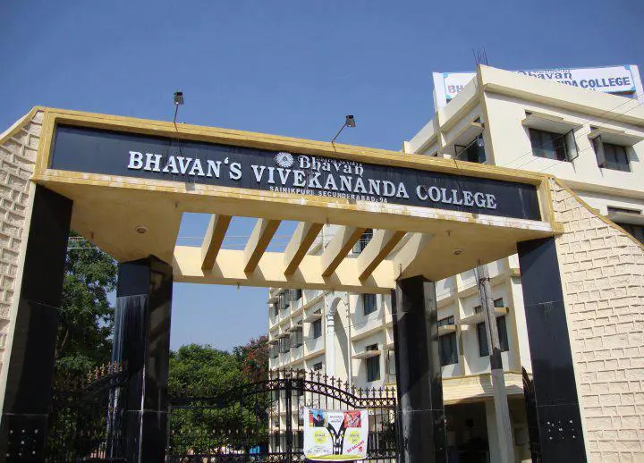
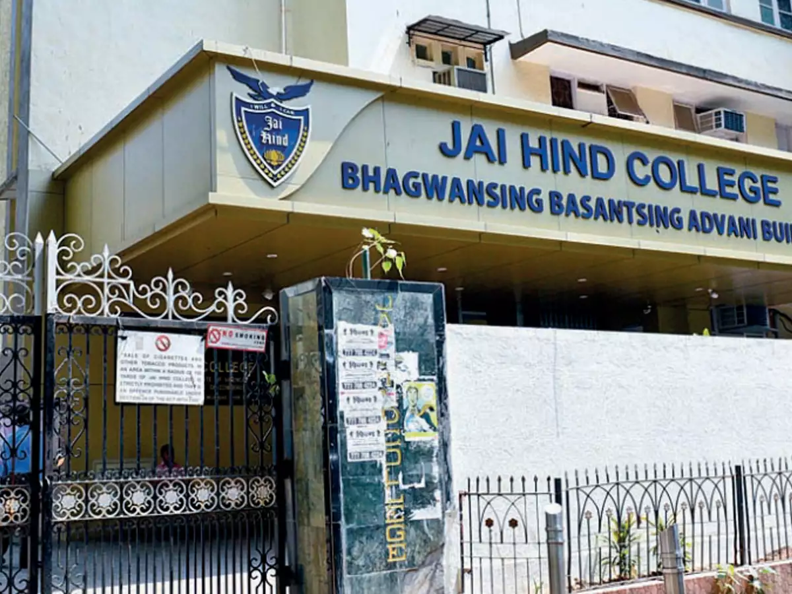

College for BAF in Mumbai
Narsee Monjee College Of Commerce And Economics

At present, Narsee Monjee is offering various UG and PG courses in the field of Commerce and Economics. Admissions to all the UG and PG courses are purely based on merit as per the University of Mumbai guidelines. The college also offers certificate courses for working professionals.
Narsee Monjee provides placement and internship opportunities to the final-year students by organizing on-campus placement drives. The highest salary package offered at Narsee Monjee is INR 9 LPA, while the average CTC stood at INR 6 LPA. KPMG, Deloitte, EY, Grant Thornton, IIFL, Direct, JP Morgan, PWC, and ICICI Bank are some of the top recruiters associated with NMCCEMithibai College

Mithibai College of Arts, Chauhan Institute of Science and Amrutben Jivanlal College of Commerce and Economics, located in Mumbai is popularly known as Mithibai College of Arts. The college is affiliated to the University of Mumbai and accredited grade “A” by the NAAC.
Bhavans College
Bhavan's College is a prominent institute in Mumbai and also one of the affiliated colleges of Mumbai University. The college offers undergraduate and postgraduate courses such as BA, B.Com., BMM and M.Sc. with multiple specializations to 5,000 students. The college has developed a well-experienced and professional faculty of 150 academic teachers for the guidance and overall development of the students. The college has been ranked at 10th position for Commerce among Mumbai Colleges by India Today in 2021.
Besides this Bhavan's College has also obtained 88th position for Arts by India Today in 2021. The admission to all the UG courses is provided on the basis of merit scores achieved by the students in the class 10+2 level board examination whereas, for PG courses, the candidate has to qualify for the bachelor’s degree examination with the minimum required marks from a recognized university.
Jai Hind College
Jai Hind College, established in 1948, is an autonomous college located in Mumbai and affiliated with the University of Mumbai. It is a junior college as well as a regular degree college. The college offers all three subject streams of Science, Commerce, and Arts for 12th grade and offers 12 undergraduate programs, 5 postgraduate programs, 1 Research program and 25 Certificate/Skill development/Value-added Courses, and also several self-financed and vocational courses to improve the employability of the students.
Admission to the college is based on merits obtained in the previous qualifying examination. The college continues to attract over 90 companies including some top MNCs like Ernst & Young, KPMG, and Deloitte every year to offer placement opportunities to the students. Some of the Jai Hind College's notable alumni are Priyanka Chopra, Aishwarya Rai, John Abraham, Sunil Dutt, Kajal Aggarwal, Kunal Kamra, Vishal Dadlani, Shaan, Malaika Arora, Kiara Advani, etc.
K J Somaiya College Of Arts & Commerce - [KJSAC]

At present, KJSAC is offering various UG, PG Courses namely, BA, B.Com, MA, and M.Com. The college also offers a doctoral-level program to offer Ph.D. degrees. Admissions to all the courses are strictly based on the entrance exams conducted by the University of Mumbai.
From the placement perspective, KJ Somaiya College of Arts & Commerce holds a record of more than 50% placements. More than 50 companies visit every year to recruit students. The highest salary package has touched the INR 7 LPA mark, while the average CTC offered is INR 2-3 LPA.